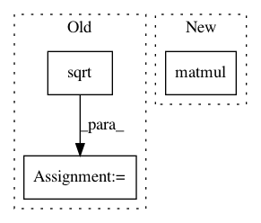

e8a945606e0b3dafe71ce2f1bf1b52ab3b05428c,gpytorch/lazy/kronecker_product_added_diag_lazy_tensor.py,KroneckerProductAddedDiagLazyTensor,_solve,#KroneckerProductAddedDiagLazyTensor#Any#Any#Any#,95
Before Change
// so that
// (\otimes K_i + \otimes D_i)^{-1} = (\otimes D_i^{1/2})^{-1}
// \tilde Q (\tilde \Lambda + I)^{-1} \tilde Q (\otimes D_i^{1/2})
dlt_inv_root = dlt.sqrt().inverse()
symm_prod = KroneckerProductLazyTensor(
*[d.matmul(k).matmul(d) for k, d in zip(lt.lazy_tensors, dlt_inv_root.lazy_tensors)]
)
evals, evecs = symm_prod.symeig(eigenvectors = True)
After Change
res1 = evecs._transpose_nonbatch().matmul(dlt_inv_root.matmul(rhs))
res2 = evals_p_i.inv_matmul(res1)
res3 = evecs.matmul(res2)
res = dlt_inv_root.matmul(res3)
return res.to(rhs_dtype)
tmp_term = S.matmul(Lambda_I.inv_matmul(S._transpose_nonbatch().matmul(rhs)))
res = lt._inv_matmul(rhs - tmp_term)
In pattern: SUPERPATTERN
Frequency: 3
Non-data size: 3
Instances
Project Name: cornellius-gp/gpytorch
Commit Name: e8a945606e0b3dafe71ce2f1bf1b52ab3b05428c
Time: 2021-02-10
Author: wjm363@nyu.edu
File Name: gpytorch/lazy/kronecker_product_added_diag_lazy_tensor.py
Class Name: KroneckerProductAddedDiagLazyTensor
Method Name: _solve
Project Name: cornellius-gp/gpytorch
Commit Name: 198493be78000034e4ce36d846bda0a82fd0779f
Time: 2021-01-16
Author: balandat@fb.com
File Name: gpytorch/lazy/diag_lazy_tensor.py
Class Name: DiagLazyTensor
Method Name: sqrt_inv_matmul
Project Name: cornellius-gp/gpytorch
Commit Name: 9af9ab51cee0c212ba1c689ae047558889464bc2
Time: 2018-11-22
Author: balandat@fb.com
File Name: test/likelihoods/test_general_multitask_gaussian_likelihood.py
Class Name: TestMultiTaskGPRegression
Method Name: test_multitask_low_rank_noise_covar